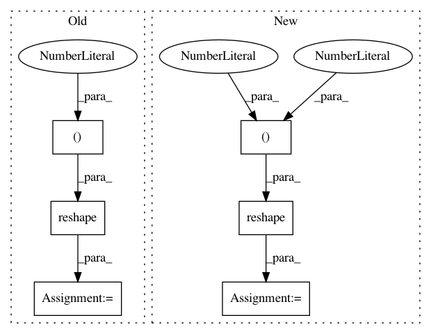

359e7627b46e850688c95cf6d1de48b77f9df901,keras/backend/tensorflow_backend.py,,bias_add,#Any#Any#Any#,3929
Before Change
if len(bias_shape) == 1:
x += reshape(bias, (1, bias_shape[0], 1, 1, 1))
else:
x += reshape(bias, (1, bias_shape[3]) + bias_shape[:3])
elif data_format == "channels_last":
if len(bias_shape) == 1:
x += reshape(bias, (1, 1, 1, bias_shape[0]))
else:
After Change
new_shape = (1, 1, 1, 1, bias_shape[0])
else:
new_shape = (1,) + bias_shape
new_shape = transpose_shape(new_shape, data_format, spatial_axes=(1, 2, 3))
x += reshape(bias, new_shape)
elif ndim(x) == 4:
if data_format == "channels_first":
if len(bias_shape) == 1:
if _has_nchw_support():
In pattern: SUPERPATTERN
Frequency: 3
Non-data size: 6
Instances
Project Name: keras-team/keras
Commit Name: 359e7627b46e850688c95cf6d1de48b77f9df901
Time: 2018-08-08
Author: gabrieldemarmiesse@gmail.com
File Name: keras/backend/tensorflow_backend.py
Class Name:
Method Name: bias_add
Project Name: keras-team/keras
Commit Name: 672a873ffb344dfa030103cad69bdbc948184e8e
Time: 2018-08-08
Author: gabrieldemarmiesse@gmail.com
File Name: keras/backend/tensorflow_backend.py
Class Name:
Method Name: bias_add
Project Name: dmlc/gluon-cv
Commit Name: 47c6377324b4906ed5e133011350c22d1f809466
Time: 2020-05-01
Author: cheungchih@gmail.com
File Name: scripts/gan/srgan/train_srgan.py
Class Name: SubpixelBlock
Method Name: hybrid_forward